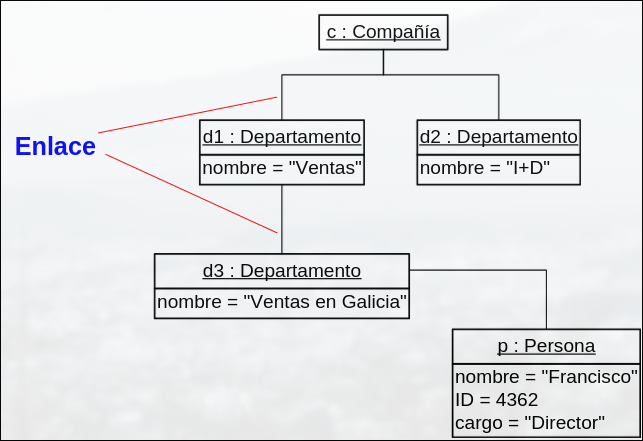
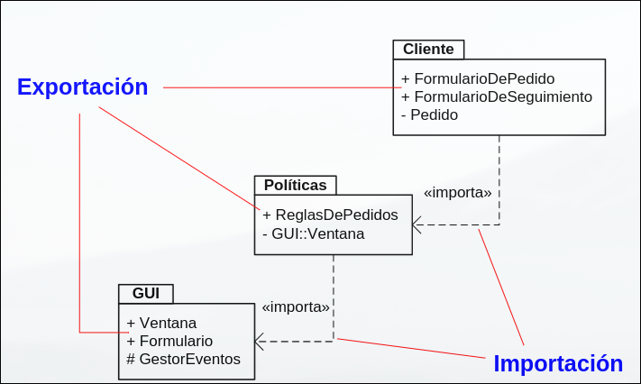
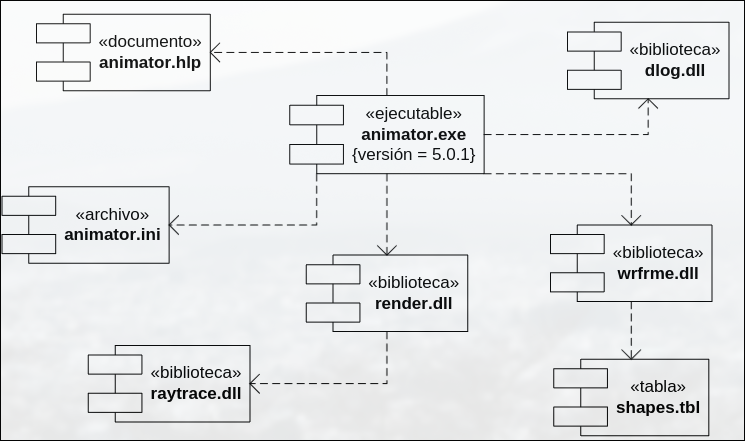
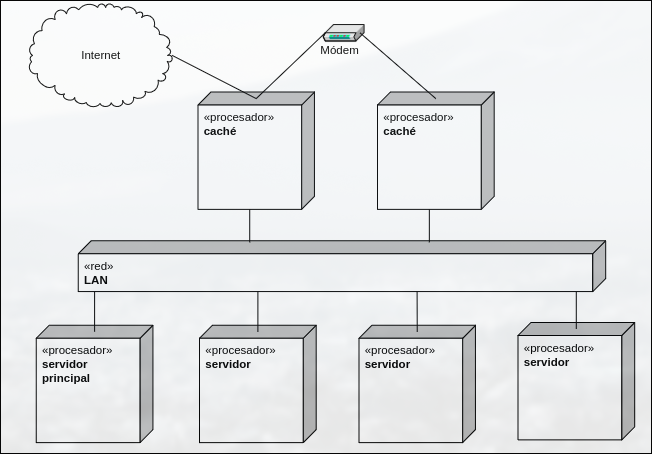
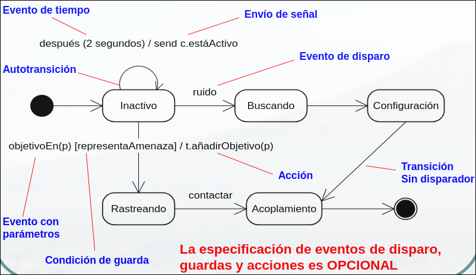

Otros Diagramas de Modelado
Tema 6 de 10 Segundo curso, 2.º cuatrimestre ≈ 4 min de lectura
Temas de DESOFT · 6/10
5.1 Diagrama de Objetos
¿Qué es?
Representa una fotografía estática de los objetos (instancias de clases) en un momento específico del tiempo.
Propósito
- Mostrar cómo están relacionados los objetos en una situación concreta.
- Ver configuraciones ejemplo del sistema.
Detalles clave
- No muestra clases, sino especificaciones de instancias.
- Puede incluir objetos de clases abstractas o atributos incompletos (porque es una especificación, no una ejecución real).

6.2 Diagrama de Paquetes
¿Qué es?
Representa cómo se organiza y agrupa un sistema en paquetes lógicos.
Propósito
- Agrupar clases, interfaces y otros elementos.
- Mostrar dependencias entre paquetes, lo que ayuda a gestionar la complejidad.
Detalles clave
- Los paquetes pueden contener otros paquetes.
- Hay un paquete raíz que abarca todo el sistema.
- Las dependencias indican que algún elemento interno depende de otro (no todos).
- Permite controlar visibilidad y encapsulamiento.
Analogía
Como carpetas dentro de otras carpetas en tu computadora, organizadas por temas (funcionalidad, módulo, etc.).

6.3 Diagrama de Componentes
¿Qué es?
Representa los componentes físicos de un sistema de software y sus dependencias.
Propósito
- Mostrar cómo el sistema está dividido en módulos reutilizables.
- Refleja los elementos que pueden ser compilados, desplegados o reemplazados.
Detalles clave
- Cada componente tiene nombre y puede tener estereotipos como
<<executable>>,<<library>>,<<document>>, etc. - Indica relaciones entre interfaces ofrecidas y requeridas.
Analogía
Como las piezas de LEGO de un sistema: cada una hace algo y puede ser reemplazada o ensamblada con otras.

6.4 Diagrama de Despliegue
¿Qué es?
Muestra la arquitectura física de un sistema: hardware y software durante la ejecución.
Propósito
- Modelar la infraestructura de ejecución.
- Visualizar dónde y cómo se despliegan los componentes del sistema.
Detalles clave
- Incluye nodos (máquinas físicas o virtuales).
- Muestra componentes de software ejecutándose en esos nodos.
- Ayuda en decisiones de distribución, rendimiento y escalabilidad.
Analogía
Como un plano de red de servidores, con los programas que corren en cada uno.

6.5 Diagrama de Estados
¿Qué es?
Describe cómo cambia el estado de un objeto a lo largo del tiempo en respuesta a eventos.
Propósito
- Entender el comportamiento de un objeto durante su ciclo de vida.
- Identificar eventos, condiciones y transiciones.
Detalles clave
- Se enfoca en un solo objeto (como
Pedido,Semáforo,Conexión). - Puede haber superestados que agrupan estados similares.
Analogía
Como los estados de una puerta: abierta, cerrada, bloqueada y cómo cambia según acciones (eventos) como cerrar(), bloquear().

6.6 Diagrama de Actividades
¿Qué es?
Muestra el flujo de trabajo o procesos en el sistema, incluso con actividades concurrentes.
Propósito
- Representar procesos de negocio, lógica de un método o tareas paralelas.
- Modelar decisiones, ramificaciones, sincronizaciones, ciclos.
Detalles clave
- Hereda ideas de los diagramas de flujo, estados y redes de Petri.
- Se usa mucho en procesos de negocio, tareas automatizadas o casos de uso complejos.
Analogía
Como una receta de cocina con pasos en secuencia y en paralelo (ej. mientras hierve el agua, vas picando los ingredientes).
| Tipo de diagrama | Enfocado en... | Ideal para... |
|---|---|---|
| Obxectos | Instancias en un momento específico | Mostrar configuración de objetos |
| Paquetes | Organización y dependencias lógicas | Modularizar el sistema |
| Compoñentes | Elementos físicos del software | Ver arquitectura modular y reutilizable |
| Despregue | Infraestructura de ejecución | Modelar hardware y distribución |
| Estados | Ciclo de vida de un objeto | Mostrar cómo responde a eventos |
| Actividades | Flujo de trabajo y procesos | Representar lógica compleja o concurrente |